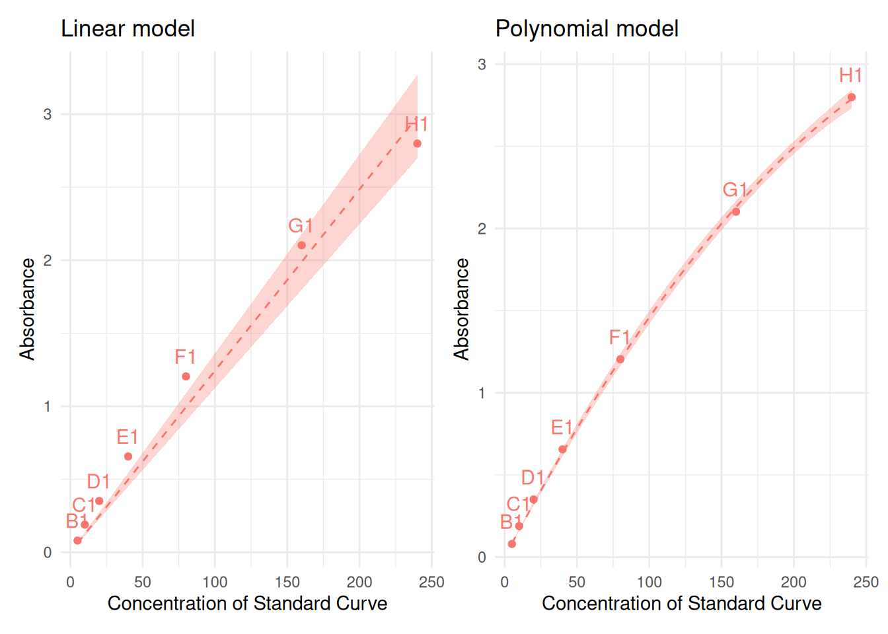
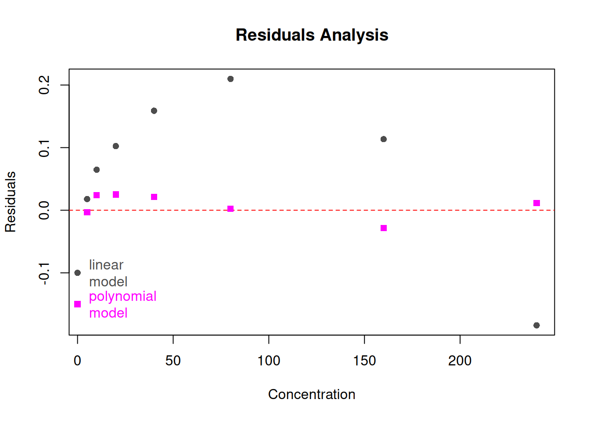
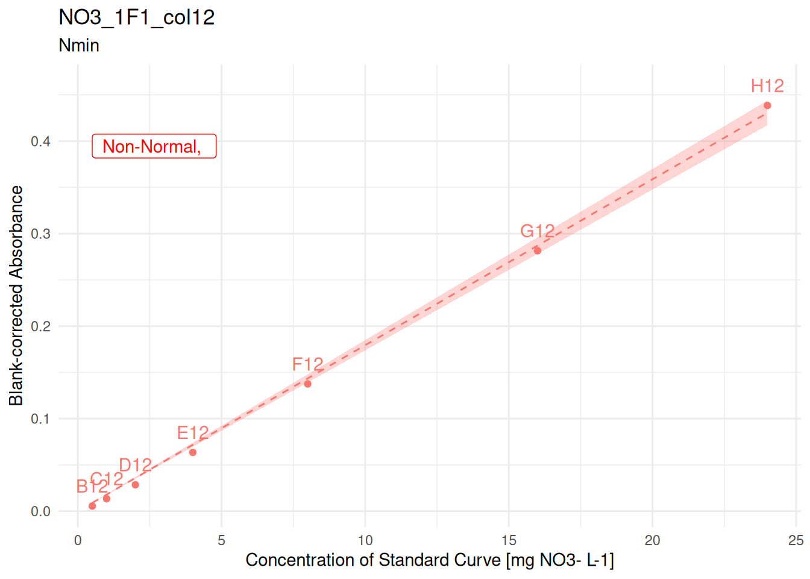
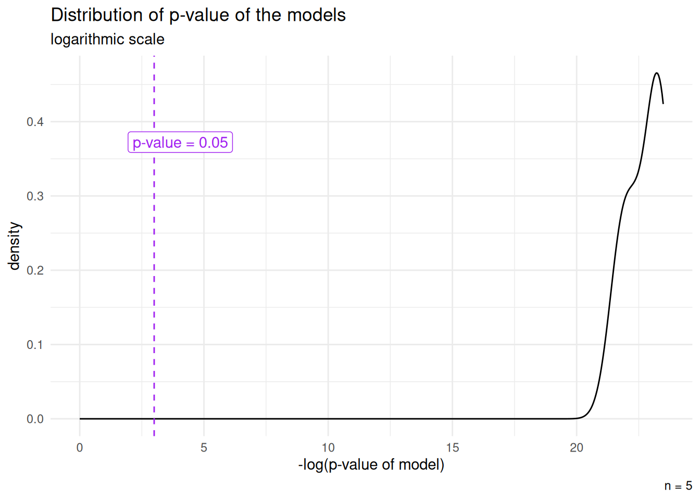
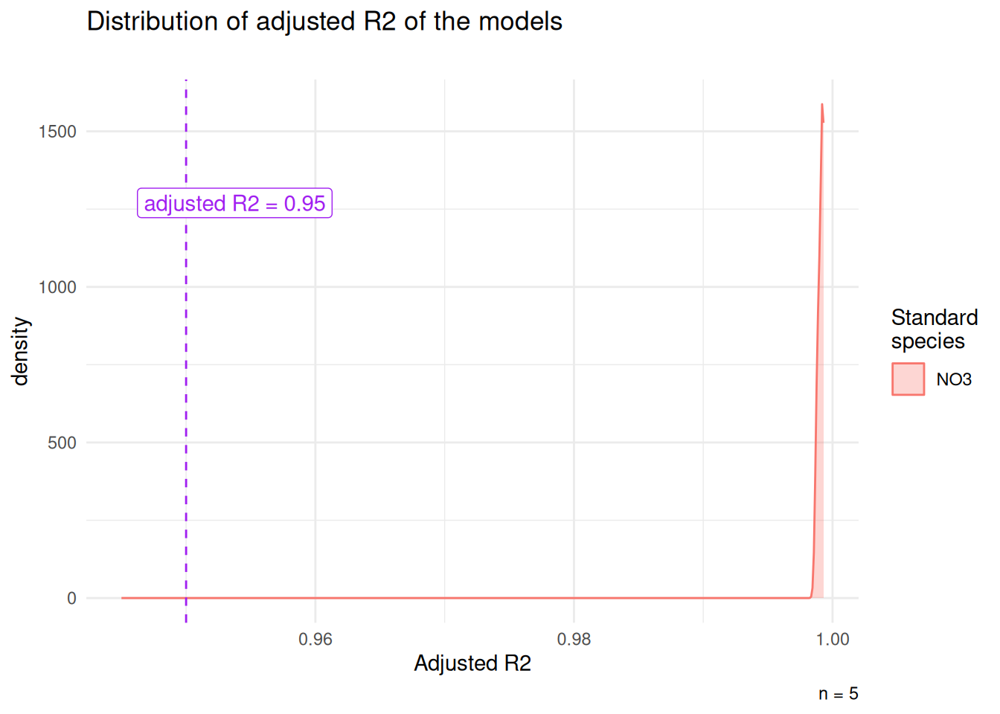
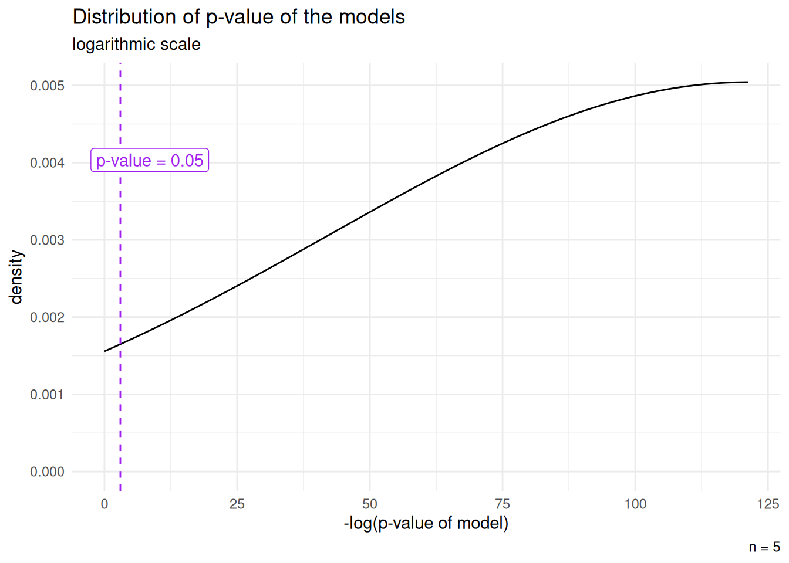
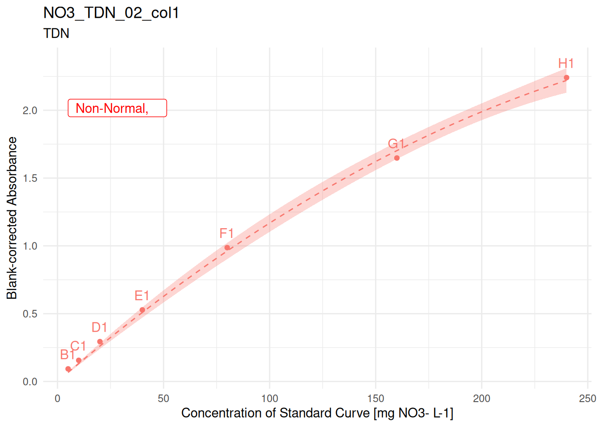
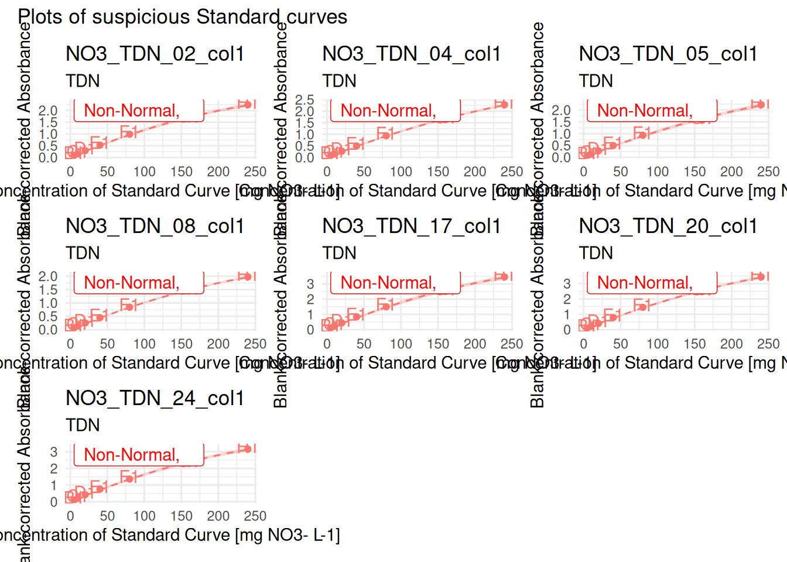
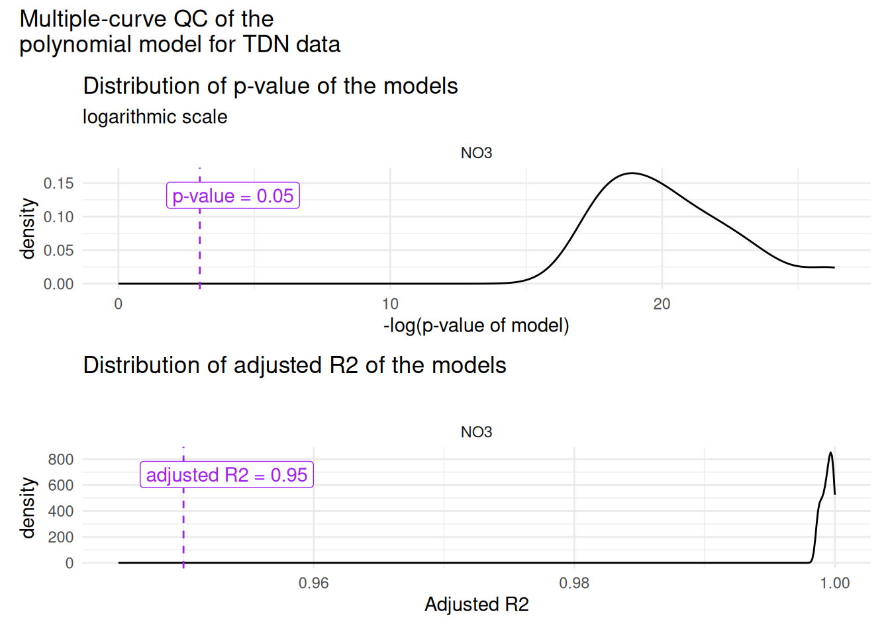
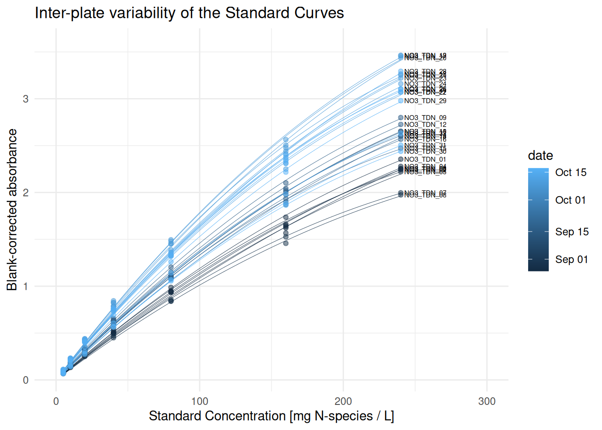

TODO
Consider creating a function for the multiple-curve QC (+ explain idea why it is relevant to look at it)
For conversion: explain well difference btw mg N-sp/L and mg N/L, and how it relates to molar masses
Consider using ggplot to build the residuals plots, evtl. make it a function (or even make a function of the whole comparison plotting process (4 plots given from the data of one curve)
in epilogue: add examples of downstream steps: correct dilutions, per sample average and outlier removal, conversion to ppm, etc.
make a function out of the concentration inference step
Work in progress
This vignette is still under development, bugs are to be expected
Introduction
In this vignette, we cover the steps from blank-corrected absorbance to concentration in nitrogen [mg N / L], although this can easily be used for dosing other molecules1, as long as the the relationship between absorbance and concentration is linear or polynomial.
Prerequisites
data has been imported and tidied, see
vignette("import-tidy", package = "plate2N")data has been blank-corrected, see
vignette("blank-correction", package = "plate2N")Outliers have been removed throughout that process, see previous vignettes and also
vignette("handling-outliers", package = "plate2N")
1 - Get blank-corrected data
Here is what the blank-corrected data looks like (see prerequisites)
sample_corrected
#> # A tibble: 264 × 25
#> row column well_id unique_well_id dataset plate_id map abs_corrected
#> <chr> <chr> <chr> <chr> <chr> <chr> <chr> <dbl>
#> 1 A 2 A2 A2_NO3_1F1 Nmin NO3_1F1 81_t1_z2 0.0312
#> 2 A 2 A2 A2_NO3_1F2 Nmin NO3_1F2 97_t1_z1 -0.00975
#> 3 A 2 A2 A2_NO3_1F3 Nmin NO3_1F3 89_t1_z3 0.0104
#> 4 A 2 A2 A2_NO3_1F4 Nmin NO3_1F4 81_t1_z1 0.0437
#> 5 A 2 A2 A2_NO3_1F5 Nmin NO3_1F5 Std_3_t1 0.0832
#> 6 A 3 A3 A3_NO3_1F1 Nmin NO3_1F1 82_t1_z2 0.0452
#> 7 A 3 A3 A3_NO3_1F2 Nmin NO3_1F2 98_t1_z1 -0.0128
#> 8 A 3 A3 A3_NO3_1F3 Nmin NO3_1F3 90_t1_z3 0.0124
#> 9 A 3 A3 A3_NO3_1F4 Nmin NO3_1F4 82_t1_z3 0.0638
#> 10 A 3 A3 A3_NO3_1F5 Nmin NO3_1F5 98_t1_z3 0.0232
#> # ℹ 254 more rows
#> # ℹ 17 more variables: blank_sdev <dbl>, blank_coeff_var_percent <dbl>,
#> # date <lgl>, time <lgl>, sampling_time <chr>, std_column <chr>,
#> # std_sp <chr>, std_unit <chr>, std_prep <chr>, std_conc <chr>,
#> # sample_dilution <chr>, extractant_column <lgl>, extractant_sp <chr>,
#> # extractant_unit <chr>, extractant_conc <dbl>, empty_column <lgl>,
#> # wait_min <chr>
std_corrected
#> # A tibble: 70 × 26
#> row column well_id unique_well_id dataset plate_id unique_curve_id map
#> <chr> <chr> <chr> <chr> <chr> <chr> <chr> <chr>
#> 1 B 1 B1 B1_NO3_1F1 Nmin NO3_1F1 NO3_1F1_col1 Std
#> 2 B 1 B1 B1_NO3_1F2 Nmin NO3_1F2 NO3_1F2_col1 Std
#> 3 B 1 B1 B1_NO3_1F3 Nmin NO3_1F3 NO3_1F3_col1 Std
#> 4 B 1 B1 B1_NO3_1F4 Nmin NO3_1F4 NO3_1F4_col1 Std
#> 5 B 1 B1 B1_NO3_1F5 Nmin NO3_1F5 NO3_1F5_col1 Std
#> 6 B 12 B12 B12_NO3_1F1 Nmin NO3_1F1 NO3_1F1_col12 Std
#> 7 B 12 B12 B12_NO3_1F2 Nmin NO3_1F2 NO3_1F2_col12 Std
#> 8 B 12 B12 B12_NO3_1F3 Nmin NO3_1F3 NO3_1F3_col12 Std
#> 9 B 12 B12 B12_NO3_1F4 Nmin NO3_1F4 NO3_1F4_col12 Std
#> 10 B 12 B12 B12_NO3_1F5 Nmin NO3_1F5 NO3_1F5_col12 Std
#> # ℹ 60 more rows
#> # ℹ 18 more variables: abs_corrected <dbl>, date <lgl>, time <lgl>,
#> # sampling_time <chr>, std_column <chr>, std_sp <chr>, std_unit <chr>,
#> # std_prep <chr>, sample_dilution <chr>, extractant_column <lgl>,
#> # extractant_sp <chr>, extractant_unit <chr>, extractant_conc <dbl>,
#> # empty_column <lgl>, wait_min <chr>, std_conc <dbl>, blank_sdev <dbl>,
#> # blank_coeff_var_percent <dbl>2 - Tips for choosing the model
Choose your model wisely
In this pipeline, we show how to implement a linear model and a polynomial model. The section on linear model is detailed in great depth, then the polynomial model is presented more briefly, with insistence only on points that differ from the linear model.
For dosage of mineral N pools, a polynomial model can be necessary, for example, when concentrations (and absorbance values) are high. The best red flag for the inappropriateness of the linear model is when the fit of the curve does not seem to suit the plotting of the experimental points.
For new pipelines, always check out the standard curves graphically to ensure a good fit.
Curvature at high absorbance can come from more than one source — for example, the color-forming reagent becoming limiting at high concentrations, or stray light, an optical artifact of the plate reader itself that affects any sufficiently high absorbance reading regardless of chemistry. Switching to a polynomial model is a reasonable empirical fix either way, but it’s worth understanding roughly why your curve bends before doing so, since the two causes have different implications — for example, whether readings above your calibrated range can be trusted, or whether diluting samples is a better fix than adding model complexity.
We will illustrate the choice of model on another data set called tidy_TDN (equivalent in structure to the tidy_plates we had at the beginning of the vignette blank-correction):
tidy_TDN
#> # A tibble: 3,072 × 8
#> row column well_id unique_well_id dataset plate_id abs map
#> <chr> <chr> <chr> <chr> <chr> <chr> <chr> <chr>
#> 1 A 1 A1 A1_NO3_TDN_01 TDN NO3_TDN_01 0.095 Std
#> 2 A 1 A1 A1_NO3_TDN_02 TDN NO3_TDN_02 0.097 Std
#> 3 A 1 A1 A1_NO3_TDN_03 TDN NO3_TDN_03 0.113 Std
#> 4 A 1 A1 A1_NO3_TDN_04 TDN NO3_TDN_04 0.114 Std
#> 5 A 1 A1 A1_NO3_TDN_05 TDN NO3_TDN_05 0.132 Std
#> 6 A 1 A1 A1_NO3_TDN_06 TDN NO3_TDN_06 0.12 Std
#> 7 A 1 A1 A1_NO3_TDN_07 TDN NO3_TDN_07 0.095 Std
#> 8 A 1 A1 A1_NO3_TDN_08 TDN NO3_TDN_08 0.09 Std
#> 9 A 1 A1 A1_NO3_TDN_09 TDN NO3_TDN_09 0.14 Std
#> 10 A 1 A1 A1_NO3_TDN_10 TDN NO3_TDN_10 0.143 Std
#> # ℹ 3,062 more rowsTo illustrate the polynomial vs the linear model, we extract standard data for a single curve from that dataset. We chose here the 9th curve because it illustrates the purpose nicely. But to base a model decision at the dataset scale, you would have to repeat this on several curves, e.g., by sampling a random number of curves, then plotting them in a loop.
# take data for a single curve and format it for the plotting
curve <- (std_corrected_TDN |>
# whatever steps are required to isolate a single curve
# Here: grouping by plate and column (2 curves per plate)
dplyr::group_by(plate_id, column) |>
# dataset with several N-species for each plate_id --> choose only one
dplyr::filter(std_sp == "NO3") |>
# dplyr::rename(abs = abs_corrected) |>
# split the data by group:
# it creates a list where each group is one element
dplyr::group_split()
# take the 9th element of the list
)[[9]]
# check it out
curve
#> # A tibble: 7 × 13
#> row column well_id unique_well_id dataset plate_id unique_curve_id map
#> <chr> <chr> <chr> <chr> <chr> <chr> <chr> <chr>
#> 1 B 1 B1 B1_NO3_TDN_09 TDN NO3_TDN_09 NO3_TDN_09_col1 Std
#> 2 C 1 C1 C1_NO3_TDN_09 TDN NO3_TDN_09 NO3_TDN_09_col1 Std
#> 3 D 1 D1 D1_NO3_TDN_09 TDN NO3_TDN_09 NO3_TDN_09_col1 Std
#> 4 E 1 E1 E1_NO3_TDN_09 TDN NO3_TDN_09 NO3_TDN_09_col1 Std
#> 5 F 1 F1 F1_NO3_TDN_09 TDN NO3_TDN_09 NO3_TDN_09_col1 Std
#> 6 G 1 G1 G1_NO3_TDN_09 TDN NO3_TDN_09 NO3_TDN_09_col1 Std
#> 7 H 1 H1 H1_NO3_TDN_09 TDN NO3_TDN_09 NO3_TDN_09_col1 Std
#> # ℹ 5 more variables: abs_corrected <dbl>, std_sp <chr>, std_unit <chr>,
#> # date <date>, std_conc <dbl>Now we compute both models: linear and polynomial, so that we may compare them.
The linear model takes abs_corrected ~ 0 + std_conc as a formula, which is the equivalent to say: y = mx + p with y = absorbance and x = concentration. m is the slope, and because we blank-corrected the data already, we are constraining the model to fit through the origin, i.e., p = 0, which justifies the 0 + std_conc in the model call.
The polynomial model takes abs_corrected ~ 0 + std_conc + I(std_conc^2) as a formula, which is the equivalent to say: y = ax^2 + bx + c. With the same logic as above, y = absorbance, x = concentration and c = 0 (blank-corrected data).
While both models return p-values corresponding to highly significant models (see next chunk), and very high adjusted R-squared, we will see with the plots that, indeed, the polynomial model is a much better fit in this case
(sum_linear <- summary(lm_linear))
#>
#> Call:
#> stats::lm(formula = abs_corrected ~ 0 + std_conc, data = curve)
#>
#> Residuals:
#> Min 1Q Median 3Q Max
#> -0.18370 0.04129 0.10244 0.13621 0.20977
#>
#> Coefficients:
#> Estimate Std. Error t value Pr(>|t|)
#> std_conc 0.0124279 0.0004877 25.48 2.41e-07 ***
#> ---
#> Signif. codes: 0 '***' 0.001 '**' 0.01 '*' 0.05 '.' 0.1 ' ' 1
#>
#> Residual standard error: 0.1477 on 6 degrees of freedom
#> Multiple R-squared: 0.9908, Adjusted R-squared: 0.9893
#> F-statistic: 649.5 on 1 and 6 DF, p-value: 2.405e-07
(sum_poly <- summary(lm_poly))
#>
#> Call:
#> stats::lm(formula = abs_corrected ~ 0 + std_conc + I(std_conc^2),
#> data = curve)
#>
#> Residuals:
#> 1 2 3 4 5 6 7
#> -0.003064 0.023935 0.025124 0.021264 0.002595 -0.028541 0.011591
#>
#> Coefficients:
#> Estimate Std. Error t value Pr(>|t|)
#> std_conc 1.672e-02 2.846e-04 58.75 2.70e-08 ***
#> I(std_conc^2) -2.127e-05 1.360e-06 -15.64 1.94e-05 ***
#> ---
#> Signif. codes: 0 '***' 0.001 '**' 0.01 '*' 0.05 '.' 0.1 ' ' 1
#>
#> Residual standard error: 0.0229 on 5 degrees of freedom
#> Multiple R-squared: 0.9998, Adjusted R-squared: 0.9997
#> F-statistic: 1.363e+04 on 2 and 5 DF, p-value: 4.551e-10Seeing the summary of both models: both are significant, but the p-value of the coefficient for the second degree term (a in ax^2) in the polynomial model is <<0.05, which indicates that that term significantly contributes to the model.
Now, we build the 2 plots. In the call to the plot below, we rename abs_corrected with abs, as that is the argument that the function plot_std() takes.
# build the linear model plot
p_linear <-
plot_std(
curve |> dplyr::rename(abs = abs_corrected),
through_origin = TRUE,
model = "linear") +
ggplot2::theme(legend.position = "none") +
ggplot2::labs(title = "Linear model")
# build the polynomial model plot
p_poly <-
plot_std(
curve |> dplyr::rename(abs = abs_corrected),
through_origin = TRUE,
model = "poly") +
ggplot2::theme(legend.position = "none") +
ggplot2::labs(title = "Polynomial model")
# looking at both plots next to each other (package "patchwork" needed)
p_linear + p_poly
Indeed, the polynomial model fits a lot better
Let’s look at the Residual plot to confirm this intuition
# Extract residual data from the 2 models
res_linear <- stats::residuals(sum_linear)
res_poly <- stats::residuals(sum_poly)
# plot both on the same graph
# plot residuals for linear model
plot(curve$std_conc, res_linear, main = "Residuals Analysis", xlab = "Concentration", ylab = "Residuals", col = "grey30", pch = 16)
# add red line at y = 0
graphics::abline(h = 0, col = "red", lty = 2)
# add residuals for polynomial model
graphics::points(curve$std_conc, res_poly, col = "magenta", pch = 15)
# add legend
graphics::points(0, y = -0.1, col = "grey30", pch = 16)
graphics::text(x = 6, y = -0.1, labels = "linear\nmodel", col = "grey30", adj = 0)
graphics::points(0, y = -0.15, col = "magenta", pch = 15)
graphics::text(x = 6, y = -0.15, labels = "polynomial\nmodel", col = "magenta", adj = 0)
Whereas this quick approach suffices to convince us that a polynomial model is a better fit for this particular curve, one should evaluate several curves before taking a decision that concerns a larger data set.
3 - Linear model from Standard Curves
lm_std_curve() computes a per-curve linear regression between 2 columns of the input data with lm(abs_corrected ~ 0 + std_conc, data = curve) which is the linear model that constraints the curve to go through the origin. lm_std_curve() returns a table containing one row per standard curve, and a series of information characterizing the performance of the linear model for that curve (see below and also ?lm_std_curve().
3.1 - Compute linear model, round 1
lm_std_curve() defines a curve based on the groups (defined by dplyr::group_by()) of the data given as input (std_corrected in the example below). Additionally to the columns abs_corrected and std_conc (numeric), the function also requires the column unique_curve_id.
# compute the model and store model details
(lm_table_raw <- lm_std_curve(
std_corrected |> dplyr::group_by(plate_id, column)))
#> # A tibble: 10 × 12
#> dataset plate_id unique_curve_id std_sp slope r_squared adj_r_squared
#> <chr> <chr> <chr> <chr> <dbl> <dbl> <dbl>
#> 1 Nmin NO3_1F1 NO3_1F1_col1 NO3 0.0189 0.999 0.999
#> 2 Nmin NO3_1F1 NO3_1F1_col12 NO3 0.0179 0.999 0.999
#> 3 Nmin NO3_1F2 NO3_1F2_col1 NO3 0.0178 0.999 0.999
#> 4 Nmin NO3_1F2 NO3_1F2_col12 NO3 0.0190 0.999 0.999
#> 5 Nmin NO3_1F3 NO3_1F3_col1 NO3 0.0187 0.999 0.999
#> 6 Nmin NO3_1F3 NO3_1F3_col12 NO3 0.0185 0.999 0.999
#> 7 Nmin NO3_1F4 NO3_1F4_col1 NO3 0.0178 0.999 0.999
#> 8 Nmin NO3_1F4 NO3_1F4_col12 NO3 0.0188 0.999 0.999
#> 9 Nmin NO3_1F5 NO3_1F5_col1 NO3 0.0193 0.999 0.999
#> 10 Nmin NO3_1F5 NO3_1F5_col12 NO3 0.0185 0.999 0.998
#> # ℹ 5 more variables: lm_p <dbl>, normality_lm_residuals <chr>,
#> # shapiro_p <dbl>, homoscedasticity_lm_residuals <chr>, breusch_pagan_p <dbl>
# check out column names, type, and data
str(lm_table_raw)
#> tibble [10 × 12] (S3: tbl_df/tbl/data.frame)
#> $ dataset : chr [1:10] "Nmin" "Nmin" "Nmin" "Nmin" ...
#> $ plate_id : chr [1:10] "NO3_1F1" "NO3_1F1" "NO3_1F2" "NO3_1F2" ...
#> $ unique_curve_id : chr [1:10] "NO3_1F1_col1" "NO3_1F1_col12" "NO3_1F2_col1" "NO3_1F2_col12" ...
#> $ std_sp : chr [1:10] "NO3" "NO3" "NO3" "NO3" ...
#> $ slope : num [1:10] 0.0189 0.0179 0.0178 0.019 0.0187 ...
#> $ r_squared : num [1:10] 0.999 0.999 0.999 0.999 0.999 ...
#> $ adj_r_squared : num [1:10] 0.999 0.999 0.999 0.999 0.999 ...
#> $ lm_p : num [1:10] 6.49e-11 2.79e-10 6.03e-11 1.64e-10 9.25e-11 ...
#> $ normality_lm_residuals : chr [1:10] "Normal" "Not Normal" "Normal" "Normal" ...
#> $ shapiro_p : num [1:10] 0.836 0.01 0.824 0.962 0.805 0.81 0.632 0.646 0.602 0.535
#> $ homoscedasticity_lm_residuals: chr [1:10] "Homoscedasticity" "Homoscedasticity" "Homoscedasticity" "Homoscedasticity" ...
#> $ breusch_pagan_p : num [1:10] 0.445 0.721 0.686 0.789 0.916 0.483 0.46 0.445 0.537 0.6213.2 - QC Standard curves - check conditions of linear model
The function suspicious_lm() extracts from an lm_table as produced above all plates where the linear model is not optimal, i.e., either the p-value of the model is above 0.05, or its residuals are not normally distributed, or there is heteroscedasticity of residuals. lm_table_suspicious can serve for the identification of outlier wells.
In this simplified data set, there is only one suspicious curve:
# extract all plates where "something" is not perfect
(lm_table_suspicious <- lm_table_raw |> suspicious_lm())
#> # A tibble: 1 × 12
#> dataset plate_id unique_curve_id std_sp slope r_squared adj_r_squared
#> <chr> <chr> <chr> <chr> <dbl> <dbl> <dbl>
#> 1 Nmin NO3_1F1 NO3_1F1_col12 NO3 0.0179 0.999 0.999
#> # ℹ 5 more variables: lm_p <dbl>, normality_lm_residuals <chr>,
#> # shapiro_p <dbl>, homoscedasticity_lm_residuals <chr>, breusch_pagan_p <dbl>For visual aid (useful for larger data sets), plot_list_lm() creates a list of plots of each curve given as argument. This means that it can be used to store plots any subset of curves, or for the whole dataset. Calling individual plots from this list can help spotting possible outlier wells, which can be removed with similar steps as shown above.
Each element of the list is one plot, so that calling suspicious_lm_plotlist[[i]] will return the i-th plot. The plots are named in the list, so that you can also access any plot by calling the unique_curve_id, e.g., with suspicious_lm_plotlist$NO3_1F1_col12
# here, we create a list of plots from only the suspicious curve
suspicious_lm_plotlist <- plot_list_lm(
lm_data = lm_table_suspicious,
std_data = std_corrected)
# check out the names of elements of the list (here only 1)
names(suspicious_lm_plotlist)
#> [1] "NO3_1F1_col12"
# check one plot out
suspicious_lm_plotlist[[1]]
# or by name
suspicious_lm_plotlist$NO3_1F1_col12
When there are numerous (suspicious) curves, we can take advantage of the package patchwork to display multiple plots (example hereunder with the whole lm_table)
full_plotlist <- plot_list_lm(
lm_data = lm_table_raw,
std_data = std_corrected)
patchwork::wrap_plots(full_plotlist, axis_titles = "collect_y") +
patchwork::plot_annotation(title = "Plots of suspicious Standard curves")
3.3 - outlier removal
At this point, you may want to remove obvious outlier wells. Follow steps as shown in vignettes from prerequisites to remove_wells().
Let’s say that we want to remove well E12 from plate NO3_1F1 in dataset Nmin:
to_remove <- tibble::tibble(
dataset = "Nmin",
plate_id = "NO3_1F1",
well_id = "E12"
)
std_corrected_wash1 <- std_corrected |> remove_wells(to_remove)From now on, we no longer use std_corrected, but only std_corrected_wash1. We recommend always running one more round of quality check on the cleaned datasets before approving regression equations.
3.4 - Per-dilution averages (if 2+ curves per plate)
Once the outlier wells have been removed from single curves, in the case where several curves were pipetted per 96-well plate, we still need to perform a per-dilution average of absorbance. Indeed, there likely have been 2 events of pipetting of the same dilution, rather than 2 independent dilutions.
WARNING
The next step computes per plate per row means for the standard curves.
If some wells have been swapped in some plates, this may cause problems. Make sure there was no pipetting issue, or correct raw data or solve it through code
std_dilution_average() does that and creates an artificial “column 13”.
Notice that the average reduced the number of rows ~ 2-fold, and notice unique curve ids ending with _col13.
std_dilution_avg <- std_corrected_wash1 |> std_dilution_average()
# Check it out (notice )
std_dilution_avg
#> # A tibble: 35 × 25
#> # Groups: plate_id [5]
#> plate_id row column well_id unique_curve_id abs_mean dataset map date
#> <chr> <chr> <dbl> <chr> <chr> <dbl> <chr> <chr> <lgl>
#> 1 NO3_1F1 B 13 B13 NO3_1F1_col13 0.00700 Nmin Std NA
#> 2 NO3_1F1 C 13 C13 NO3_1F1_col13 0.0145 Nmin Std NA
#> 3 NO3_1F1 D 13 D13 NO3_1F1_col13 0.0295 Nmin Std NA
#> 4 NO3_1F1 E 13 E13 NO3_1F1_col13 0.0655 Nmin Std NA
#> 5 NO3_1F1 F 13 F13 NO3_1F1_col13 0.142 Nmin Std NA
#> 6 NO3_1F1 G 13 G13 NO3_1F1_col13 0.293 Nmin Std NA
#> 7 NO3_1F1 H 13 H13 NO3_1F1_col13 0.446 Nmin Std NA
#> 8 NO3_1F2 B 13 B13 NO3_1F2_col13 0.00800 Nmin Std NA
#> 9 NO3_1F2 C 13 C13 NO3_1F2_col13 0.0145 Nmin Std NA
#> 10 NO3_1F2 D 13 D13 NO3_1F2_col13 0.0345 Nmin Std NA
#> # ℹ 25 more rows
#> # ℹ 16 more variables: time <lgl>, sampling_time <chr>, std_column <chr>,
#> # std_sp <chr>, std_unit <chr>, std_prep <chr>, sample_dilution <chr>,
#> # extractant_column <lgl>, extractant_sp <chr>, extractant_unit <chr>,
#> # extractant_conc <dbl>, empty_column <lgl>, wait_min <chr>, std_conc <dbl>,
#> # blank_sdev <dbl>, blank_coeff_var_percent <dbl>3.5 - Compute linear model + QC - round 2
We can now rerun the linear model on the cleaned and (if required) per-dilution averaged curve, by repeating the same steps as above: computation of linear model, identification of suspicious curves and plotting
# Generate linear model data
(lm_std_mean <- lm_std_curve(
std_dilution_avg |> dplyr::rename(abs_corrected = abs_mean)))
#> # A tibble: 5 × 12
#> dataset plate_id unique_curve_id std_sp slope r_squared adj_r_squared
#> <chr> <chr> <chr> <chr> <dbl> <dbl> <dbl>
#> 1 Nmin NO3_1F1 NO3_1F1_col13 NO3 0.0184 0.999 0.999
#> 2 Nmin NO3_1F2 NO3_1F2_col13 NO3 0.0184 0.999 0.999
#> 3 Nmin NO3_1F3 NO3_1F3_col13 NO3 0.0186 0.999 0.999
#> 4 Nmin NO3_1F4 NO3_1F4_col13 NO3 0.0183 0.999 0.999
#> 5 Nmin NO3_1F5 NO3_1F5_col13 NO3 0.0189 0.999 0.999
#> # ℹ 5 more variables: lm_p <dbl>, normality_lm_residuals <chr>,
#> # shapiro_p <dbl>, homoscedasticity_lm_residuals <chr>, breusch_pagan_p <dbl>
# look for suspicious curves
(lm_suspicious_mean <- lm_std_mean |> suspicious_lm())
#> # A tibble: 0 × 12
#> # ℹ 12 variables: dataset <chr>, plate_id <chr>, unique_curve_id <chr>,
#> # std_sp <chr>, slope <dbl>, r_squared <dbl>, adj_r_squared <dbl>,
#> # lm_p <dbl>, normality_lm_residuals <chr>, shapiro_p <dbl>,
#> # homoscedasticity_lm_residuals <chr>, breusch_pagan_p <dbl>Good news, there are no more suspicious linear models anymore. Should there be any, one more round of QC as described above can still be helpful in some cases (plot_list_lm()). However, one should not expect to always reach normality of residuals with only 7 points. If the curve fits and the p-value of the model if very low, non-normality and heteroscedasticity can be accepted. They are used as tools to “flag” suspicious curves, but should not be used as too strict criteria.
Let’s store the last correction into a clean variable name to reduce possible confusion, and let’s compute all the plots in a big list, for storage purposes. We could then export this as one output data in a single list with readr::write_rds(), or save the plots with ggsave().
# save the last wash in a clean variable name
std_data_clean <- std_dilution_avg
lm_table_clean <- lm_std_mean
# run model on the last, clean version
lm_plots_clean <- plot_list_lm(
lm_table_clean, std_data_clean |> dplyr::rename(abs_corrected = abs_mean))
# store output and clean data in a list for export (optional)
lm_output <- list(
"std_data_clean" = std_data_clean,
"lm_table_clean" = lm_table_clean,
"lm_plots_clean" = lm_plots_clean,
"sample_corrected" = sample_corrected
)
# just an example of how to save this in a file for downstream steps
#lm_output |> write_rds("output/data/lm_output.rds")3.6 - Multiple curve QC
The function density_lm_param() plots the density curve of either p-values or adjusted R^2 of the model (parameter p_or_r). See also ?density_lm_param() for details and examples.
First, let’s look at the distribution of p-values of the std curve regressions
density_lm_param(
lm_table_clean,
p_or_r = "p", threshold = 0.05,
facetting_std_sp = FALSE, color_std_sp = FALSE) +
# add caption with number of curves
ggplot2::labs(caption = paste0("n = ", nrow(lm_table_clean)))
Then, same with R_squared (or adjusted?)
density_lm_param(
lm_table_clean,
p_or_r = "adjR2", threshold = 0.95,
facetting_std_sp = FALSE, color_std_sp = TRUE) +
# add caption with number of curves
ggplot2::labs(caption = paste0("n = ", nrow(lm_table_clean))) 
Now we plot all curves on same plot. Here we only have 5 curves. But it can be useful to visualize the multi-curve plot to spot plates where something possibly went wrong.
#colors <- c("#7FC97F", "#BEAED4", "#FDC086")
lm_output$std_data_clean |>
ggplot2::ggplot(ggplot2::aes(
x = as.numeric(std_conc), y = abs_mean,
groups = plate_id, colour = dataset, fill = dataset)) +
ggplot2::theme_minimal() +
ggplot2::geom_smooth(
formula = y ~ 0 + x, method = "lm", se = TRUE,
alpha = 0.1, linewidth = 0.5) +
ggplot2::geom_point() 
Now, finally, we decide that we are happy with our standard curves, so we can move on to apply the equations on the data
3.7 - Infer sample concentration from regression equation
Check that we are now left with only one curve per plate (i.e., we indeed took a per-dilution average)
if (
(lm_output$std_data_clean |> dplyr::group_by(plate_id) |> dplyr::n_groups()) ==
(lm_output$std_data_clean |> dplyr::group_by(unique_curve_id) |> dplyr::n_groups())
) {message("All good: there is exactly one curve per plate")} else {
warning("Warning: there is at least one plate with several curves")
}
#> All good: there is exactly one curve per plateThe regression equation is Abs = slope * Concentration
There is a default vector containing relevant molar masses. Make sure to append it with values that are relevant for your study. This is needed to convert concentrations from mg molecule per L to mg element per L (e.g., mg NO3/L to mg N/L)
molar_masses
#> N NO3 NO2 NH4
#> 14.0069 62.0051 46.0057 36.0775Here, we
connect regression data to sample absorbance data with
reg_join_abs().apply the regression equation to go from absorbance to concentration in mg N-sp per L
convert unit to mg N per L using
molar_massesandconvert_molec().
data_mg_N_L <-
# add slope + info regression (p-val and R2) to absorbance data
reg_join_abs(lm_output$lm_table_clean, lm_output$sample_corrected, target_sp = "N") |>
# compute concentration from absorbance
dplyr::mutate(conc_mgNsp_L = abs_corrected / slope) |>
convert_molec(masses = molar_masses)
# Check it out
data_mg_N_L
#> # A tibble: 264 × 13
#> dataset plate_id map well_id abs_corrected std_sp target_sp std_unit slope
#> <chr> <chr> <chr> <chr> <dbl> <chr> <chr> <chr> <dbl>
#> 1 Nmin NO3_1F1 81_t… A2 0.0312 NO3 N mg NO3-… 0.0184
#> 2 Nmin NO3_1F2 97_t… A2 -0.00975 NO3 N mg NO3-… 0.0184
#> 3 Nmin NO3_1F3 89_t… A2 0.0104 NO3 N mg NO3-… 0.0186
#> 4 Nmin NO3_1F4 81_t… A2 0.0437 NO3 N mg NO3-… 0.0183
#> 5 Nmin NO3_1F5 Std_… A2 0.0832 NO3 N mg NO3-… 0.0189
#> 6 Nmin NO3_1F1 82_t… A3 0.0452 NO3 N mg NO3-… 0.0184
#> 7 Nmin NO3_1F2 98_t… A3 -0.0128 NO3 N mg NO3-… 0.0184
#> 8 Nmin NO3_1F3 90_t… A3 0.0124 NO3 N mg NO3-… 0.0186
#> 9 Nmin NO3_1F4 82_t… A3 0.0638 NO3 N mg NO3-… 0.0183
#> 10 Nmin NO3_1F5 98_t… A3 0.0232 NO3 N mg NO3-… 0.0189
#> # ℹ 254 more rows
#> # ℹ 4 more variables: adj_r_squared <dbl>, lm_p <dbl>, conc_mgNsp_L <dbl>,
#> # conc_mgN_L <dbl>We finally have our computed concentration for each well, expressed in mg N per L. This is not the end of the data pipeline, but it is the end of what really belongs in this vignette. Downstream steps are different for each study. However, we propose below, in Section 7, a few examples of further data transformation.
4 - Polynomial model
In this section, we cover the sames steps as in the previous 2 sections, but implementing a polynomial, rather than linear, model. This was necessary, for example, when dosing total dissolved nitrogen, i.e., dosing nitrate after a total oxidation of all N-compounds to nitrate. For this experiment, standard curve concentrations have been increased ten-fold. This resulted in highly concentrated solutions generating absorbance values above 3. It appears that a polynomial model is more appropriate in this case, as can be seen in the next chunks (example of a single curve).
Does a polynomial model change blank correction?
No. Blank correction (see the
blank-correctionvignette) was already carried out using simple subtraction, and that remains valid here even though the model in this section is polynomial. The blank is measured at (or near) zero concentration, before either of the mechanisms mentioned in Tips for choosing the model becomes relevant — so blank subtraction and curve shape are answering two separate questions. Nothing about using a polynomial model here requires revisiting the earlier blank-correction step.
Only polynomial model - specific steps are reviewed in detail
In theory, applying a polynomial model would go through the same logic as the linear model:
1st computation of the model + plotting suspicious curves
optional removal of outliers
if outliers were removed: 2nd computation of the model + plotting suspicious curves again, etc until we are satisfied with the curves
In case of several curves per plate: computation of the per-dilution (per-plate-row) average of the standard curve
If average was computed: 3rd computation of the model on per-dilution averages
Infering sample concentration
In this section, we mainly focus on steps that differ from the linear model. If it appears too cryptic here, go and check the linear model-equivalent section.
For tips on choice of model, see Section 4
The dataset for Total Dissolved Nitrogen data (TDN), and its standard curve data look like this (very similar to what we have seen with other data sets before)
std_corrected_TDN
#> # A tibble: 224 × 13
#> row column well_id unique_well_id dataset plate_id unique_curve_id map
#> <chr> <chr> <chr> <chr> <chr> <chr> <chr> <chr>
#> 1 B 1 B1 B1_NO3_TDN_01 TDN NO3_TDN_01 NO3_TDN_01_col1 Std
#> 2 B 1 B1 B1_NO3_TDN_02 TDN NO3_TDN_02 NO3_TDN_02_col1 Std
#> 3 B 1 B1 B1_NO3_TDN_03 TDN NO3_TDN_03 NO3_TDN_03_col1 Std
#> 4 B 1 B1 B1_NO3_TDN_04 TDN NO3_TDN_04 NO3_TDN_04_col1 Std
#> 5 B 1 B1 B1_NO3_TDN_05 TDN NO3_TDN_05 NO3_TDN_05_col1 Std
#> 6 B 1 B1 B1_NO3_TDN_06 TDN NO3_TDN_06 NO3_TDN_06_col1 Std
#> 7 B 1 B1 B1_NO3_TDN_07 TDN NO3_TDN_07 NO3_TDN_07_col1 Std
#> 8 B 1 B1 B1_NO3_TDN_08 TDN NO3_TDN_08 NO3_TDN_08_col1 Std
#> 9 B 1 B1 B1_NO3_TDN_09 TDN NO3_TDN_09 NO3_TDN_09_col1 Std
#> 10 B 1 B1 B1_NO3_TDN_10 TDN NO3_TDN_10 NO3_TDN_10_col1 Std
#> # ℹ 214 more rows
#> # ℹ 5 more variables: abs_corrected <dbl>, std_sp <chr>, std_unit <chr>,
#> # date <date>, std_conc <dbl>
samples_corrected_TDN
#> # A tibble: 2,560 × 15
#> row column well_id unique_well_id dataset plate_id map abs_corrected
#> <chr> <chr> <chr> <chr> <chr> <chr> <chr> <dbl>
#> 1 A 2 A2 A2_NO3_TDN_01 TDN NO3_TDN_01 102_t2_… 0.459
#> 2 A 2 A2 A2_NO3_TDN_02 TDN NO3_TDN_02 92_t2_z… 0.471
#> 3 A 2 A2 A2_NO3_TDN_03 TDN NO3_TDN_03 90_t2_z… 0.434
#> 4 A 2 A2 A2_NO3_TDN_04 TDN NO3_TDN_04 90_t2_z… 0.433
#> 5 A 2 A2 A2_NO3_TDN_05 TDN NO3_TDN_05 99_t2_z… 0.460
#> 6 A 2 A2 A2_NO3_TDN_06 TDN NO3_TDN_06 81_t2_z… 0.438
#> 7 A 2 A2 A2_NO3_TDN_07 TDN NO3_TDN_07 83_t2_z… 0.380
#> 8 A 2 A2 A2_NO3_TDN_08 TDN NO3_TDN_08 81_t2_z… 0.375
#> 9 A 2 A2 A2_NO3_TDN_09 TDN NO3_TDN_09 102_t2_… 0.759
#> 10 A 2 A2 A2_NO3_TDN_10 TDN NO3_TDN_10 92_t2_z… 0.694
#> # ℹ 2,550 more rows
#> # ℹ 7 more variables: std_sp <chr>, std_unit <chr>, std_conc <chr>,
#> # date <date>, extr_id <chr>, blank_sdev <dbl>, blank_coeff_var_percent <dbl>4.1 - Compute polynomial model on Standard curves
These steps follow the same steps as in section Section 5 , with some adaptations.
First, we perform a polynomial model on each NO3 curve individually. In the background, the function lm_std_curve() performs the model stats::lm(abs_corrected ~ 0 + std_conc + I(std_conc^2), data = curve) on each individual curve from the data
# Compute the polynomial model
lm_TDN_raw <- lm_std_curve(
grouped_data = std_corrected_TDN |> dplyr::group_by(unique_curve_id),
model = "poly")
# Check it out
lm_TDN_raw
#> # A tibble: 32 × 15
#> dataset plate_id unique_curve_id std_sp poly_a poly_a_p poly_b poly_b_p
#> <chr> <chr> <chr> <chr> <dbl> <dbl> <dbl> <dbl>
#> 1 TDN NO3_TDN_01 NO3_TDN_01_col1 NO3 -0.0000152 7.40e-4 0.0134 6.71e-7
#> 2 TDN NO3_TDN_02 NO3_TDN_02_col1 NO3 -0.0000174 4.93e-4 0.0134 8.32e-7
#> 3 TDN NO3_TDN_03 NO3_TDN_03_col1 NO3 -0.0000149 1.10e-4 0.0129 9.70e-8
#> 4 TDN NO3_TDN_04 NO3_TDN_04_col1 NO3 -0.0000131 6.72e-4 0.0126 3.96e-7
#> 5 TDN NO3_TDN_05 NO3_TDN_05_col1 NO3 -0.0000132 2.83e-3 0.0123 2.19e-6
#> 6 TDN NO3_TDN_06 NO3_TDN_06_col1 NO3 -0.0000107 6.68e-3 0.0119 2.44e-6
#> 7 TDN NO3_TDN_07 NO3_TDN_07_col1 NO3 -0.0000160 8.02e-6 0.0121 1.32e-8
#> 8 TDN NO3_TDN_08 NO3_TDN_08_col1 NO3 -0.0000139 1.40e-4 0.0115 1.56e-7
#> 9 TDN NO3_TDN_09 NO3_TDN_09_col1 NO3 -0.0000213 1.94e-5 0.0167 2.70e-8
#> 10 TDN NO3_TDN_10 NO3_TDN_10_col1 NO3 -0.0000186 1.07e-4 0.0155 1.16e-7
#> # ℹ 22 more rows
#> # ℹ 7 more variables: r_squared <dbl>, adj_r_squared <dbl>, lm_p <dbl>,
#> # normality_lm_residuals <chr>, shapiro_p <dbl>,
#> # homoscedasticity_lm_residuals <chr>, breusch_pagan_p <dbl>This produces a table that has a similar structure to the one from the linear model, though columns are slightly different to reflect the differences in the model. This table has one row per standard curve. Columns poly_a and poly_b correspond to the coefficients a and b, respectively, in the equation y = a*x^2 + b*x + c, where
c = 0 because we used blank-corrected absorbance and the model was forced to go through the origin
y = blank-corrected absorbance
x = concentration in the compound of interest (here: nitrate)
Other columns in lm_TDN_raw contain the p-values associated to a and b (poly_a_p and poly_b_p, respectively), the R2 and adjusted R2 values, the p-value associated with the model (lm_p), and results of a normality test of residuals (columns normality_lm_residuals and shapiro_p), and results of a test of homoscedasticity (columns homoscedasticity_lm_residuals and breusch_pagan_p)
4.3 - QC Standard curve
Then we take a subset to examine individually. The function suspicious_lm() allows the subsetting of those curves where the linear model doesn’t seem to perform ideally. i.e., either non-significant model (p-value > 0.05), residuals not normally distributed, heteroscedasticity, or p-value of one of the coefficients > 0.05.
In our case, this concerns 7 curves (from 32)
# extract all plates where "something" is not perfect
(lm_suspicious <- lm_TDN_raw |> suspicious_lm(model = "poly"))
#> # A tibble: 7 × 15
#> dataset plate_id unique_curve_id std_sp poly_a poly_a_p poly_b poly_b_p
#> <chr> <chr> <chr> <chr> <dbl> <dbl> <dbl> <dbl>
#> 1 TDN NO3_TDN_02 NO3_TDN_02_col1 NO3 -0.0000174 0.000493 0.0134 8.32e-7
#> 2 TDN NO3_TDN_04 NO3_TDN_04_col1 NO3 -0.0000131 0.000672 0.0126 3.96e-7
#> 3 TDN NO3_TDN_05 NO3_TDN_05_col1 NO3 -0.0000132 0.00283 0.0123 2.19e-6
#> 4 TDN NO3_TDN_08 NO3_TDN_08_col1 NO3 -0.0000139 0.000140 0.0115 1.56e-7
#> 5 TDN NO3_TDN_17 NO3_TDN_17_col1 NO3 -0.0000252 0.00113 0.0203 1.66e-6
#> 6 TDN NO3_TDN_20 NO3_TDN_20_col1 NO3 -0.0000218 0.000483 0.0194 4.00e-7
#> 7 TDN NO3_TDN_24 NO3_TDN_24_col1 NO3 -0.0000236 0.000662 0.0187 9.99e-7
#> # ℹ 7 more variables: r_squared <dbl>, adj_r_squared <dbl>, lm_p <dbl>,
#> # normality_lm_residuals <chr>, shapiro_p <dbl>,
#> # homoscedasticity_lm_residuals <chr>, breusch_pagan_p <dbl>We can visually evaluate those plates. For visual support, we create with plot_list_lm() a list of plots where we store each individual plot of “suspicious” standard curves.
suspicious_plots <- plot_list_lm(
lm_suspicious,
std_data = std_corrected_TDN,
model = "poly")
# Look at the first plot
suspicious_plots[[1]]
Then we plot them together. Notice that the “problem” of each curve is displayed on the plots. In this case, non-normality of the residuals is always the issue. Should p-values (model or coefficients) be above 0.05 or the residuals be heteroscedastic, this would be displayed as well.
patchwork::wrap_plots(suspicious_plots, axis_titles = "keep") +
patchwork::plot_annotation(title = "Plots of suspicious Standard curves")
Whereas the shapiro test that is run in the background by lm_std_curve() to test for normality of residuals is considered a trustworthy test in general, normality is not easily achieved with only 8 data points. This non-normality result should therefore be seen as an aid to spot possibly faulty curves, rather than a strict criterion to exclude them. Visual assessment is therefore crucial.
In this case, all 7 “suspicious” curves look quite good despite not hitting the normality threshold. Should a well be very obviously outside of the curve, then use remove_wells() to remove outliers as described many times above and in previous vignettes. Then, re-run the model, etc. until you are satisfied with the curves. Per-dilution averages in case of 2 or more curves per plate can be computed as shown above for the linear model.
Caution 1: Downward facing parable or descending curve?
These functions for the polynomial model have been tested in the case where the data form a downward-facing parable. Knowing this AND the fact that we are in an ascending part of the curve, the smallest solution for x (concentration) is the correct one when solving the equation
a*x^2 + b*x - y = 0for any value of y (absorbance).For the combination of upward-facing parable AND ascending curve, however, the highest solution for x would be the right one.
Should you have data where the polynomial fit is correct, but the curves do not look like those displayed here, do check that the solutions for x in the next sections are correct. Please contact us should it not be the case
4.4 - Multiple curve QC
First, let’s look at the distribution of p-values and adjusted R^2 of the std curve regressions
TDN_p <- density_lm_param(
lm_TDN_raw,
p_or_r = "p", threshold = 0.05,
facetting_std_sp = TRUE, color_std_sp = FALSE)
TDN_adjR2 <- density_lm_param(
lm_TDN_raw, "adjR2", 0.95, color_std_sp = FALSE
)
TDN_p / TDN_adjR2 + patchwork::plot_annotation(title = "Multiple-curve QC of the\npolynomial model for TDN data")
Now we plot all curves on a single plot. Here, we check for batch-effects by assigning the date to the color aesthetics, this should be adapted as needed.
(annotation <- std_corrected_TDN |>
dplyr::select(plate_id, abs_corrected, std_conc, date) |>
dplyr::slice_max(std_conc, with_ties = TRUE))
#> # A tibble: 32 × 4
#> plate_id abs_corrected std_conc date
#> <chr> <dbl> <dbl> <date>
#> 1 NO3_TDN_01 2.36 240 2025-08-26
#> 2 NO3_TDN_02 2.24 240 2025-08-26
#> 3 NO3_TDN_03 2.25 240 2025-08-26
#> 4 NO3_TDN_04 2.28 240 2025-08-26
#> 5 NO3_TDN_05 2.22 240 2025-08-26
#> 6 NO3_TDN_06 2.26 240 2025-08-26
#> 7 NO3_TDN_07 2.00 240 2025-08-28
#> 8 NO3_TDN_08 1.97 240 2025-08-28
#> 9 NO3_TDN_09 2.80 240 2025-09-15
#> 10 NO3_TDN_10 2.65 240 2025-09-15
#> # ℹ 22 more rows
std_corrected_TDN |>
ggplot2::ggplot(ggplot2::aes(
x = as.numeric(std_conc),
y = abs_corrected, groups = plate_id,
color = date, fill = date)) +
ggplot2::theme_minimal() +
ggplot2::theme(legend.position = "right") +
ggplot2::geom_smooth(
formula = y ~ 0 + x + I(x^2), method = "lm", se = TRUE,
alpha = 0, linetype = 1, linewidth = 0.15) +
ggplot2::geom_point(alpha = 0.5) +
ggplot2::xlab("Standard Concentration [mg N-species / L]") +
ggplot2::ylab("Blank-corrected absorbance") +
ggplot2::labs(title = "Inter-plate variability of the Standard Curves") +
ggplot2::xlim(c(0, 300)) +
ggplot2::annotate(
geom = "text",
x = annotation$std_conc*1.01,
y = annotation$abs_corrected,
label = annotation$plate_id, size = 2,
hjust = 0
) 
4.5 - Infer sample concentration from regression equation
Here we use the last version of the polynomial model data (starts with “lm”). In this case, no outlier removal or per-dilution average computation was necessary, therefore we are still working with lm_TDN_raw.
First, we join the polynomial-model data (on a per-plate basis) to the sample absorbance data, i.e., each row (= sample-containing well) of the sample data receives additional columns containing polynomial model data. That is what the function reg_join_abs() does (it recognizes which model is given as input, so it works either way)
data <- lm_TDN_raw |>
reg_join_abs(
samples_corrected_TDN,
target_sp = "N")
# Check it out
data
#> # A tibble: 2,560 × 15
#> dataset plate_id map well_id abs_corrected std_sp target_sp std_unit
#> <chr> <chr> <chr> <chr> <dbl> <chr> <chr> <chr>
#> 1 TDN NO3_TDN_01 102_t2_z1… A2 0.459 NO3 N mg NO3-…
#> 2 TDN NO3_TDN_02 92_t2_z2_… A2 0.471 NO3 N mg NO3-…
#> 3 TDN NO3_TDN_03 90_t2_z3_… A2 0.434 NO3 N mg NO3-…
#> 4 TDN NO3_TDN_04 90_t2_z1_… A2 0.433 NO3 N mg NO3-…
#> 5 TDN NO3_TDN_05 99_t2_z2_… A2 0.460 NO3 N mg NO3-…
#> 6 TDN NO3_TDN_06 81_t2_z2_… A2 0.438 NO3 N mg NO3-…
#> 7 TDN NO3_TDN_07 83_t2_z3_… A2 0.380 NO3 N mg NO3-…
#> 8 TDN NO3_TDN_08 81_t2_z1_… A2 0.375 NO3 N mg NO3-…
#> 9 TDN NO3_TDN_09 102_t2_z1… A2 0.759 NO3 N mg NO3-…
#> 10 TDN NO3_TDN_10 92_t2_z2_… A2 0.694 NO3 N mg NO3-…
#> # ℹ 2,550 more rows
#> # ℹ 7 more variables: poly_a <dbl>, poly_a_p <dbl>, poly_b <dbl>,
#> # poly_b_p <dbl>, r_squared <dbl>, adj_r_squared <dbl>, lm_p <dbl>Then, we can compute the concentration in N-species in mg N / L (i.e., mg NO3-N / L, mg NH4-N / L, etc.). Because the concentration of the standard curve dilution was expressed in mg N-sp / L (i.e., mg NO3 / L or mg NH4 /L, etc.), a conversion using molar masses of both the target species (N as an element) and the origin species (e.g., NO3-) needs to take place as a last step. For that purpose, plate2N stores molar masses of N, NO3-, NO2-, NH4+ in a vector called molar_masses.
In the script below, we take the smallest value of the solutions to the 2nd degree equation a*x^2 + b*x - y = 0. See Caution 1 for more details on when to adapt this choice, which you can do by changing min() to max().
TO DO: make a function out of the concentration inference step
# Check out molar_masses
molar_masses
#> N NO3 NO2 NH4
#> 14.0069 62.0051 46.0057 36.0775
data_mg_N_L <- data |>
dplyr::rowwise() |>
dplyr::mutate(
conc_mgNsp_L = min(c(
# we take the smallest of the solutions to the 2nd degree equation
(-poly_b + sqrt(poly_b^2 - 4*poly_a*(-abs_corrected))) / (2*poly_a),
(-poly_b - sqrt(poly_b^2 - 4*poly_a*(-abs_corrected))) / (2*poly_a)
)),
.before = std_sp
) |>
# remove std_unit to avoid confusion in the new unit
dplyr::select(!std_unit) |>
convert_molec(masses = molar_masses)
# Check it out
data_mg_N_L
#> # A tibble: 2,560 × 16
#> # Rowwise:
#> dataset plate_id map well_id abs_corrected conc_mgNsp_L std_sp target_sp
#> <chr> <chr> <chr> <chr> <dbl> <dbl> <chr> <chr>
#> 1 TDN NO3_TDN_01 102_t… A2 0.459 35.6 NO3 N
#> 2 TDN NO3_TDN_02 92_t2… A2 0.471 36.9 NO3 N
#> 3 TDN NO3_TDN_03 90_t2… A2 0.434 35.1 NO3 N
#> 4 TDN NO3_TDN_04 90_t2… A2 0.433 35.8 NO3 N
#> 5 TDN NO3_TDN_05 99_t2… A2 0.460 38.9 NO3 N
#> 6 TDN NO3_TDN_06 81_t2… A2 0.438 38.1 NO3 N
#> 7 TDN NO3_TDN_07 83_t2… A2 0.380 32.7 NO3 N
#> 8 TDN NO3_TDN_08 81_t2… A2 0.375 34.0 NO3 N
#> 9 TDN NO3_TDN_09 102_t… A2 0.759 48.4 NO3 N
#> 10 TDN NO3_TDN_10 92_t2… A2 0.694 47.6 NO3 N
#> # ℹ 2,550 more rows
#> # ℹ 8 more variables: poly_a <dbl>, poly_a_p <dbl>, poly_b <dbl>,
#> # poly_b_p <dbl>, r_squared <dbl>, adj_r_squared <dbl>, lm_p <dbl>,
#> # conc_mgN_L <dbl>5 - Epilogue
We now have clean and tidy concentration data, which can be exported for further downstream analysis, for example using data_mg_N_L |> write_rds("path/to/my/output/TDN_data_mg_N_L").
Notice that so far we still have 4 data points per sample (in our example data sets, they were pipetted in 4 replicates in the 96-well plates). A pipeline for spotting and removing sample-outliers and computing per-sample average is under development and may arrive later.
TO DO: add examples of downstream steps: correct dilutions, per sample average and outlier removal, conversion to ppm, etc.